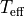

ysoisochrone¶
ysoisochrone is a Python3 package that handles the isochrones for young-stellar-objects. One of the primary goals of this package is to derive the stellar mass and ages from the isochrones.
The GitHub repo is located at: https://github.com/DingshanDeng/ysoisochrone
Background¶
There has been a long history of estimating stellar age and masses from stellar evolutionary models (e.g., Siess et al. 2000, Feiden 2016, Baraffe 2015). Different methods have been employed, from finding the closest track to an object’s luminosity and temperature (e.g., Manara et al. 2022) to employing a Bayesian approach which enables estimating uncertainties on the inferred ages and masses (e.g., Jørgensen & Lindegren 2005, Gennaro et al. 2012, Andrews et al. 2013).
Our primary method is a Bayesian inference approach (see quick start), and the Python code builds on the IDL version developed in Pascucci et al. (2016).
The code estimates the stellar masses, ages, and associated uncertainties by comparing their stellar effective temperature (

), bolometric luminosity (), and their uncertainties with different stellar evolutionary models, including those specifically developed for YSOs. Our method also uses a combination of the pre-main-sequence evolutionary tracks from Feiden (2016) and Baraffe et al. (2015) for hot () and cool stars (), respectively. This aligns with the choice as suggested in Pascucci et al. (2016) to derive the stellar masses of Chamaeleon I young stellar objects (YSOs).We choose and to estimate the stellar age and mass because extinction is significant for young stars especially when embedded in the natal cloud. Although the and are not directly observed quantities, they are the two main quantities that evolutionary models can be compared with. When medium or high-resolution spectroscopy is employed on individual targets, and can be well determined, and the best estimates for YSOs are from works where a stellar spectrum is fitted simultaneously with extinction and accretion heating (e.g., Alcalá et al. (2017)). NOTE: to obtain the best results from these input parameters, users should ensure that and (with their uncertainties) are derived simutaneously through spectroscopy (where the extinction is considered).
ysoisochrone also has a new algorithm to find the zero age main sequence (ZAMS) automatically so that post-main sequence tracks are not included when interpolating to a finer grid of evolutionary tracks (e.g., Fernandes et al. 2023).
This algorithm also enables ysoisochrone to handle other stellar evolutionary models that are not only focused on pre-main-sequence stars, such as PARSEC tracks Bressan et al. (2012). User-developed evolutionary tracks can be also utilized when provided in the specific format described in this documentation (see models for all available models, and how to use your own isochrones).
We also provide two other ways to estimate the stellar masses and ages from these isochrones.
In some cases, when a good measurement of the stellar luminosity is unavailable, we provide an option to set up the assumed age and then derive the stellar mass. Some examples when this method is useful include: targets that are very young and exceptionally bright; and targets with an edge-on disk so that the stellar is significantly underestimated.
The classical method that finds the closest point from the isochrones for each YSOs based on their and . NOTE: This stand alone function is primarily used for verification purposes as it does not provide uncertainties; and we recommend using the Bayesian approaches as described above where the uncertainties are provided in the results.
Installation¶
You can easily install the package via
pip install ysoisochrone
Or, you can also install your preferred release by downloading the package release from the GitHub page. Then unzip the package. In the terminal and in the directory of this package where setup.py exists.
pip install .
which should install the necessary dependencies.
If the installation went to plan you should be able to run the tutorial notebooks.
After installing the package, you can try import the package as
import ysoisochrone
Then you can start check out the Quick Start Guide as well as the tutorial notebooks here.
Citations¶
If you use ysoisochrone as part of your research, please cite

with the recommended phrase:
“This work uses ysoisochrone package by Deng et al. (2025), based on the IDL code developed by Pascucci et al. (2016).”
If the version number needs to be specified, please cite according to the Zenodo page. For the latest version (v1.1.3.1), use
@software{deng_2026_18859400,
author = {Deng, Dingshan and
Pascucci, Ilaria and
Fernandes, Rachel B. and
Zallio, Luigi and
Fang, Min},
title = {ysoisochrone: A Python package to estimate masses
and ages for YSOs
},
month = mar,
year = 2026,
publisher = {Zenodo},
version = {v1.1.3.1},
doi = {10.5281/zenodo.14847201},
url = {https://doi.org/10.5281/zenodo.14847201},
}
Quick Access to these works, where you can find the definitions of the methods: Deng et al. (2025); Pascucci et al. (2016)
@article{Deng2025,
doi = {10.21105/joss.07493},
url = {https://doi.org/10.21105/joss.07493},
year = {2025},
publisher = {The Open Journal},
volume = {10},
number = {106},
pages = {7493},
author = {Dingshan Deng and Ilaria Pascucci and Rachel B. Fernandes},
title = {ysoisochrone: A Python package to estimate masses and ages for YSOs}, journal = {Journal of Open Source Software}
}
@article{Pascucci2016,
author = {{Pascucci}, I. and {Testi}, L. and {Herczeg}, G.~J. and {Long}, F. and {Manara}, C.~F. and {Hendler}, N. and {Mulders}, G.~D. and {Krijt}, S. and {Ciesla}, F. and {Henning}, Th. and {Mohanty}, S. and {Drabek-Maunder}, E. and {Apai}, D. and {Sz{\H{u}}cs}, L. and {Sacco}, G. and {Olofsson}, J.},
title = {A Steeper than Linear Disk Mass-Stellar Mass Scaling Relation},
journal = {The Astrophysical Journal},
keywords = {brown dwarfs, protoplanetary disks, stars: pre-main sequence, submillimeter: planetary systems, Astrophysics - Earth and Planetary Astrophysics, Astrophysics - Solar and Stellar Astrophysics},
year = 2016,
month = nov,
volume = {831},
number = {2},
eid = {125},
pages = {125},
doi = {10.3847/0004-637X/831/2/125},
archivePrefix = {arXiv},
eprint = {1608.03621},
primaryClass = {astro-ph.EP},
adsurl = {https://ui.adsabs.harvard.edu/abs/2016ApJ...831..125P},
adsnote = {Provided by the SAO/NASA Astrophysics Data System}
}
If you use any stellar evolutionary models, please also refer to their original work/website for citations.
Community Guidelines¶
We welcome contributions, issue reports, and questions about ysoisochrone! If you encounter a bug or issue, check out the Issues page and provide a report with details about the problem and steps to reproduce it. For general support, usage questions and suggestions, you can start a discussion in Discussions page, and of course feel free to send emails directly to us. If you want to contribute, feel free to fork the repository and create pull requests here. ysoisochrone is licensed under MIT license, so feel free to make use of the source code in any part of your own work/software.
Useful links¶
There are a few other useful tools and packages that can be used to handle stellar evolutionary tracks and to estimate stellar mass and age for pre-main sequence stars. Including:
MADYSisPythonpackage that can be used to derive ages and masses for pre-main sequence stars from multi-wavelengths photometric data with the extinction corrected according to extinction maps and laws; and it could ustilize different stellar evolutionary models, including MIST, PARSEC (v1.2 and 2.0), Feiden, Baraffe and many other models for pre-MS or MS stars.isochronesis aPythonpackage that provides interface to access the MIST grids.PARSECteam provides a web interface to access different versions of their tracks together with some useful web-based tools.
Contents:¶
User Guide
Models and API